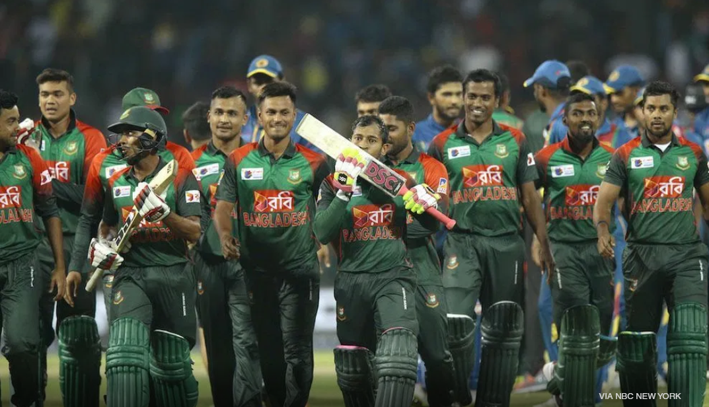

BANGLADESH CRICKET TEAM
The Bangladesh men's national cricket team popularly known as, The Tigers is administered by the Bangladesh Cricket Board (BCB). It played its first Test match in November 2000 against India in Dhaka, becoming the tenth Test-playing nation.
Bangladesh holds the record for most consecutive losses in Tests (21, between 2000 and 2002) and ODIs (23, between 2001 and 2004). After gaining Full Member status with the ICC, Bangladesh had to wait until 2004 for its first ODI win since the 1999 World Cup. The team on the losing side on that occasion was Zimbabwe, who also participated in Bangladesh's maiden Test victory in 2005; by securing a draw in the second match, Bangladesh won their first Test series. In 2009 Bangladesh toured the West Indies for two Tests and by winning both secured their first overseas Test series victory.
The team has been more successful in ODIs, having won 124 of its 367 matches.[11] It has also played 85 Twenty20 Internationals, winning 26.[12] The team has been more successful in ODIs.Bangladesh is currently ranked ninth in Tests, seventh in ODIs and tenth in T20Is by the ICC.[13]